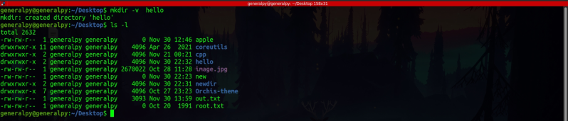

Files in linux can be created using touch command which will create an empty file.
touch <filename>If file already exists, touch command updates timestamps to latest timestamps.
Since linux is case insensitive we can create multiple files with same name but with different letter cases. To create files which contain spaces(which is not recommended), enclose filename in “ ”.
mkdir command is used to create directories. It takes directory name as argument.
mkdir directory(ies)_name
To see what mkdir is doing use -v flag which stands for verbose.

We can create multiple directories at once by specifying all of their names.
To create nested directories, parent directories must exist. Eg you write mkdir sd/ds then sd must exist exist so that ds can be created inside it.
We can also create nested directories without parent being existing by using -p flag with mkdir command. It will create missing parent directories.